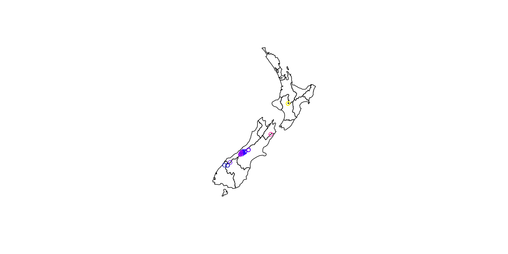
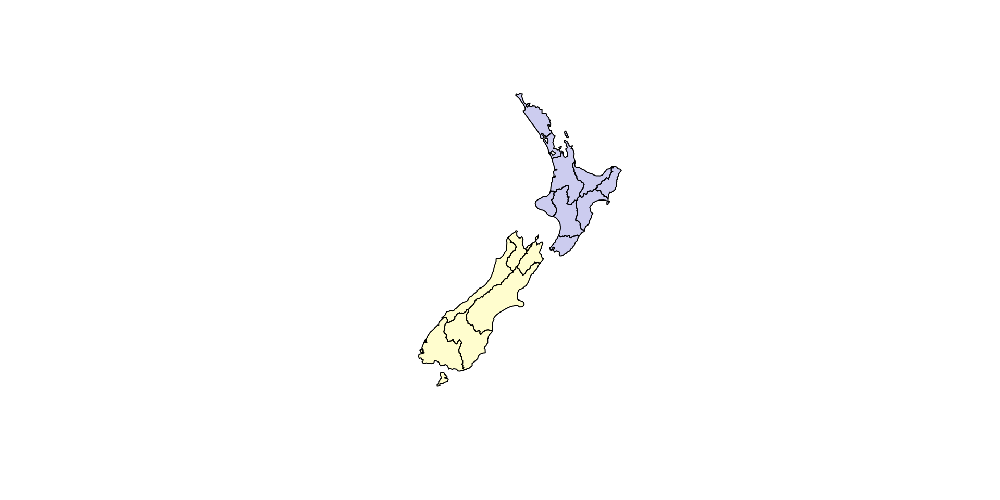
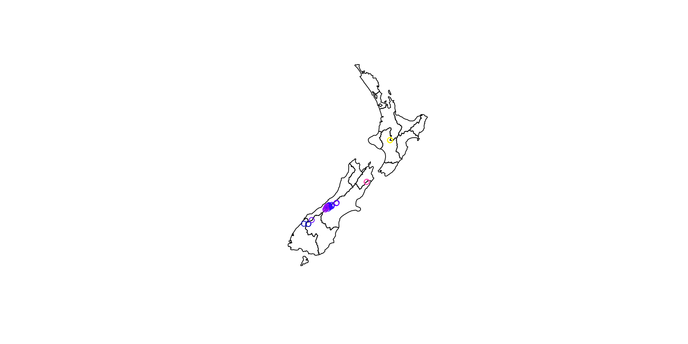
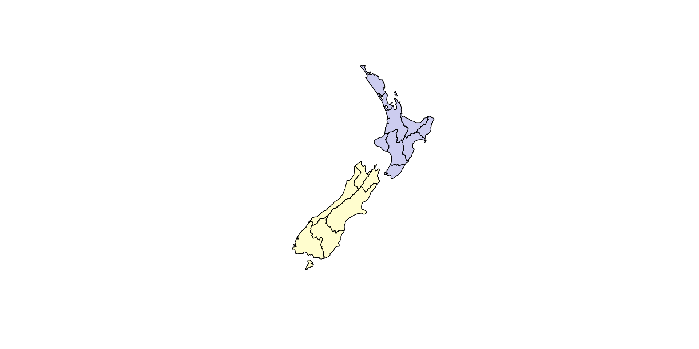
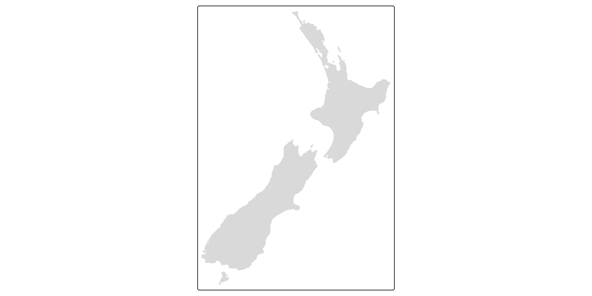
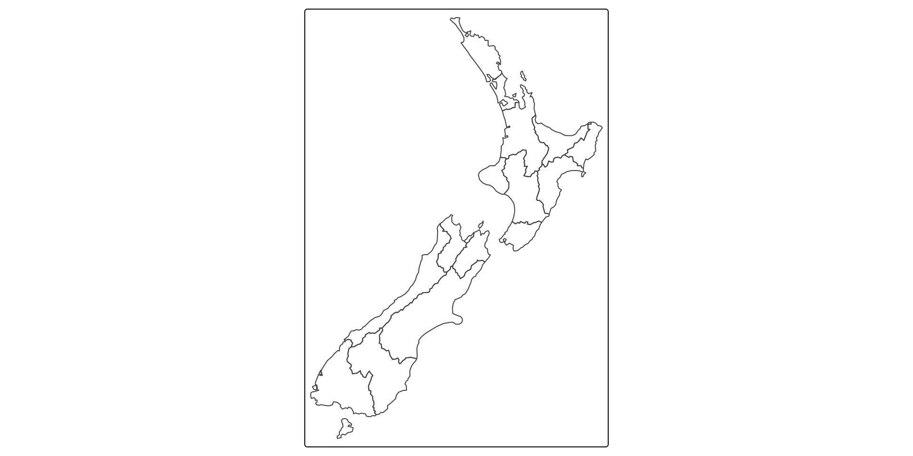
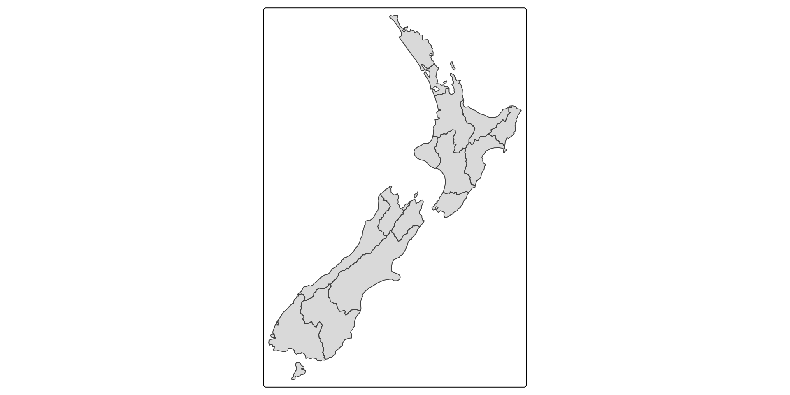

🗺
Transport Data Science
Invalid Date
Data visualization is part art and part science. The challenge is to get the art right without getting the science wrong and vice versa. A data visualization first and foremost has to accurately convey the data.
In my experience, scientists frequently (though not always!) know how to visualize data without being grossly misleading. However, they may not have a well developed sense of visual aesthetics, and they may inadvertantly make visual choices that detract from their desired message. Designers, on the other hand, may prepare visualizations that look beautiful but play fast and loose with the data.
Source: Geocomputation with R
“The core R engine was not designed specifically for the display and analysis of maps, and the limited interactive facilities it offers have drawbacks in this area” (Bivand, Pebesma, and G’omez-Rubio 2013).
Five years later…
“An example showing R’s flexibility and evolving geographic capabilities is leaflet (Cheng, Karambelkar, and Xie 2018), a package for making interactive maps that has been extended by the R community, as we’ll see in Chapter 9” (Lovelace, Nowosad, and Meunchow 2018).


# facet plots by default
plot(nz)
# plot just geometry, ready for new layers:
plot(st_geometry(nz), reset = FALSE)
# addition of new layers
plot(nz_height, add = TRUE)
# transparency
sf_cols = sf.colors(n = 2, alpha = 0.2)
nz$col = factor(x = nz$Island, labels = sf_cols)
plot(st_geometry(nz), col = as.character(nz$col))
# see ?plot.sf for moreadd = ... argument the sametmap_mode().raster objects) supported.tmap-nutshell and JSS paper (Tennekes 2018).# Add fill layer#| to nz shape
tm_shape(nz) + tm_fill()
# Add border layer to nz shape
tm_shape(nz) + tm_borders()
# Add fill and border layers to nz shape
tm_shape(nz) + tm_fill() + tm_borders() 


leaflet::leafletOutput(), enabling web mapping applications built on Rstplanr dataset flowlines_sf using: -base graphics (hint: use plot()) and -tmap (hint: use tm_shape(flowlines_sf) + ..., palette = "viridis" and other options shown in tmaptools::palette_explorer() give different colourschemes).
For more information on plotting OD data, see the stplanr-od vignetted, e.g. with
routes_fast_sf data in the stplanr package, identify roads where investment in cycling is likely to be effective.Starting point:
[1] 42[1] 42 See here for result
See here for result
Using data in the pct github package, estimate cycling potential in a city of your choice in the UK, and show the results
See the pct_training vignette for further information
Work on your portfolios, adding a new visualisation